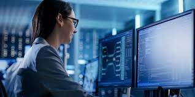

Un técnico de sistemas, es la persona encargada del mantenimiento, supervisión, reparación, creación de scripts, automatización de tareas sobre los servidores y sus sistemas operativos y aplicaciones. El programa técnico en sistemas está enfocado a que sus estudiantes estén aptos para trabajar en labores de programación, operador de centros de cómputo, copias de seguridad, mantenimiento e instalación de redes de computador, hardware, software, limpieza y diagnóstico de computadores y periféricos y otras más como personal de apoyo técnico y servicios informáticos. Esto es llevado a cabo durante un plan de estudio el cual incluye prácticas y tutorías donde se ponen a prueba dichos conocimientos.
Un técnico en sistemas puede llevar a cabo mantenimientos correctivos, preventivos y proactivos, para mejorar el rendimiento del equipo y/o mantenimiento en dispositivos de redes como enrutadores, puntos de acceso en redes alámbricas o inalámbricas. Puede dedicarse a particulares o empresas.
HISTORIA DEL COMPUTADOR
El primer computador en la historia
Todos hemos visto alguna vez una película sobre la Segunda Guerra Mundial, ¿verdad? Pues bien, por si no lo sabías, la primera generación de computadoras se contextualiza en estos tiempos debido a la necesidad de decodificar las transmisiones de los bandos enfrentados. Así, nació la primera computadora electromecánica diseñada por la Universidad de Harvard en el año 1944
Muy diferente a lo que conocemos hoy, el primer computador podía ocupar toda una habitación. Imagínate que se trataba de una computadora de 15 metros de largo y 2,5 de alto, compuesta de 760.000 piezas, 800 kilómetros de cables y 420 interruptores de control. ¿Acaso no es increíble la evolución de la historia de la computadora hasta llegar a los ordenadores de la actualidad?

MOMENTOS DE GRUPO
l primer ordenador de uso comercial
En 1951, luego de tantos precedentes, apareció el primer computador electrónico de uso comercial en la historia de la computadora, considerado parte de la primera y segunda generación de ordenadores. El Ferranti Mark I se creó en Mánchester y contaba con un índice de registros e integraba la lectura de palabras. Un mes más tarde, se replicó en Estados Unidos, y se originó la UNIVAC (UNIVersal Automatic Computer), el primer ordenador en la historia de la computadora diseñado para uso en administración y negocios.
Primer lenguaje de programación
FORTRAN fue creado en 1953 por los programadores de IBM, liderados por John Backus. Inicialmente, se creó para la computadora IBM 704.
Según Hipertextual, FORTRAN fue el primer lenguaje de alto nivel que permitía programar de manera más similar al lenguaje humano. Este lenguaje “introducía el concepto de compilador, lo que permitía traducir programas enteros para distintas máquinas, algo que antes se hacía a mano”.
Al día de hoy, todavía es uno de los lenguajes de programación más usados, especialmente para los supercomputadores del mundo. Por cierto, por si te interesa aprender un poco más sobre otros de los lenguajes más populares, te dejamos esta lista de etiquetas HTML y propiedades CSS totalmente gratis.
El primer ordenador moderno
La primera computadora del mundo, considerada uno de los antecedentes más cercanos a las computadoras tales y como las conocemos hoy, surgió en el año 1968 y fue creación del inventor estadounidense, Douglas Engelbart.
En la historia de la computadora, este primer prototipo de ordenador contaba con un mousse y una interfaz gráfica de usuario, y su demostración duró, aproximadamente, unos 100 minutos. Allí, Engelbart expuso nuevos conceptos que inauguraron el desarrollo de la informática moderna: videoconferencia, los hipervínculos, la colaboración en red, la edición de texto digital y el mouse o “ratón”.
La tercera y cuarta generación de computadoras
El tamaño y la eficiencia comenzaron a mejorar luego de 1968, con la aparición de los circuitos integrados, compuestos por chips de silicio. Este avance permitió reducir el tamaño de las computadoras, acelerar su eficiencia, reducir el consumo energético y evitar que aumentara su temperatura mientras funcionaban. ¡Este es un gran momento de la historia de la computadora!
Hacia el año 1971, comienzan a surgir mejoras en los ordenadores y así, se da paso a la cuarta generación en la historia de las computadoras. En esta instancia, lo más importante fue la integración del microprocesador que unía circuitos integrados en un solo bloque. De esta manera, fue posible avanzar hacia el desarrollo de computadoras personales o, bien conocidas como PC, y gracias a esto, allí comenzó el cambio infinito en el modo de trabajar y vivir que hoy conocemos y experimentamos en la actualidad.
Además, en este momento de la historia de las computadoras, también se da una revolución en el desarrollo de software y hardware.
El ordenador del siglo XX y XXI
En contraste con los inicios de la evolución del computador, desde los años 90, la historia de la computadora se transformó a pasos agigantados. Pero ¿por qué se generaron tantos avances continuos e imparables, en comparación con el enlentecido desarrollo de las computadoras de primeras generaciones?
La respuesta a esto, tiene que ver, principalmente, con que las innovaciones del lado del software y hardware crecieron a una velocidad inimaginable gracias al inicio y desarrollo de la tecnología e inteligencia artificial.
La quinta generación de computadoras
Aunque la quinta y sexta generación no tienen un comienzo y un final muy definido en la historia de la computadora, fue a partir de los años 1990, y con la aparición de internet y la inteligencia artificial, que las grandes empresas encargadas de fabricar computadoras comenzaron a marcar enormes avances de microelectrónica y software.
Para entender un poco por qué, en la historia de la computadora, sus avances nos sorprenden cada vez más y más, es necesario comprender de qué hablamos cuando hablamos de inteligencia artificial. Para eso, Alejandro Lee, profesor de nuestro curso Introducción al Machine Learning, nos explica lo siguiente:
“La inteligencia artificial es una disciplina formalizada hace décadas, es el campo de conocimiento que se encarga de construir “seres inteligentes”. Es considerado el estudio de agentes inteligentes o cualquier sistema que pueda percibir o interpretar su ambiente, y tomar acciones que lo lleven a cumplir objetivos. Interactuamos con este tipo de entidades todo los días, por ejemplo, los softwares con los que puedes jugar al ajedrez de manera virtual, es un tipo de inteligencia artificial.”
Es justo en esta época en la que aparecen las computadoras portátiles, los dispositivos de almacenamiento y las computadoras capaces de realizar tareas en simultáneo y con una eficiencia que impresionaba.
La sexta generación de computadoras
La sexta generación tiene un comienzo un poco difuso; podríamos ubicar su inicio luego de los años 90, pero continúa hasta la actualidad. No cabe dudas de que los avances en la historia de la computadora fueron muchos hasta llegar al resultado de hoy. Sin embargo, es justamente por la cantidad y, sobre todo, la calidad de modificaciones que existieron, que los ordenadores ocupan el lugar tan trascendental que tienen actualmente en nuestra vida cotidiana.
Por ejemplo, ciertas áreas de trabajo como el diseño gráfico o la arquitectura dependen de las capacidades y la eficiencia de las computadoras que se utilicen, y es por esto que podemos encontrar ordenadores con diversos sistemas operativos como Apple o Windows, capaces de llevar adelante enormes tareas y en un tiempo admirable.
veamos un video por que es buena ocion estudiar sistemas

 <
<